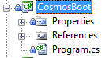
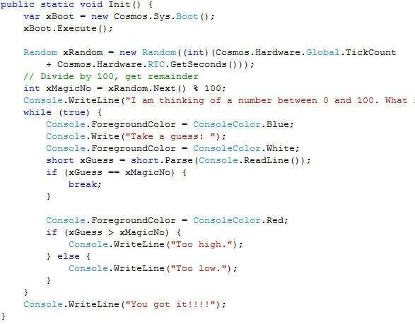
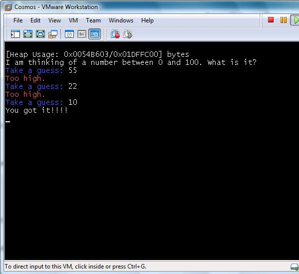
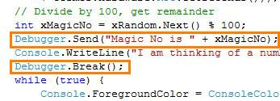
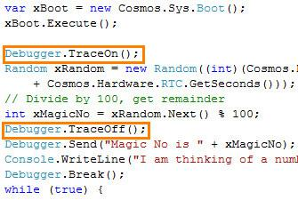
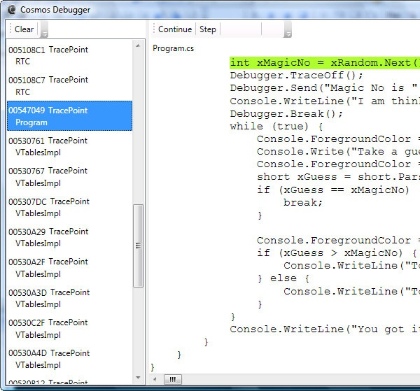

Cosmos (C# Open Source Managed Operating System) is an operating system development kit which uses Visual Studio as its development environment. Despite C# in the name any .NET based language can be used including VB.NET, Fortran, Delphi Prism, IrinPython, F# and more. Cosmos itself and the kernel routines are primarly written in C#, and thus the Cosmos name. Besides that, NOSMOS (.NET Open Source Managed Operating System) sounds stupid.
Cosmos is not an operating system in the traditional sense, but instead it is "Operating System Kit", or as I like to say "Operating System Legos". Cosmos lets you create oeprating systems just as Visual Studio and C# normally let you create applications. Most users can write and boot their own operating system in just a few minutes, all using Visual Studio. Milestone 5 includes new features such as an integrated project type in Visual Studio, and an integrated debugger. You can debug your operating system directly from Visual Studio using breakpoints.
Cosmos is available in two distributions, the developer kit (dev kit), and the user kit. The dev kit is designed for users who want to work on Cosmos itself. The user kit is designed for those who are interested in building their own operating system and doing some Cosmos work. The dev kit might be though of as the Cosmos SDK. Most users should start off with the user kit as it is not so overwhelming like the dev kit. This article focuses on the user kit.
----------------------
In the Boot folder, and then the Demo folder you will see a CosmosBoot project. This is the empty shell used in the User Kit for the new project template. This is the minimal Operating System that Cosmos can build. You can copy this file and change it to your needs. Let's take a quick look.

Properties and References are standard parts of any .NET project. Let's look in Program.csp> Note on images: CodeProject limits images to 600 pixels in width. I've chosen to crop the width to retain readability.
Init is the entry point that will be called after the system is booted. This is where you put your code. Some sample code has been generated already and you can change it. Be sure to leave the first two lines alone, they initialize memory, hardware, etc.
Let's take a look at something a little more complex though. Here is a demo called Guess. It is a simple application which asks the user to guess a number. As you can see, it is all standard C# code, and aside from the first two lines for booting the code can function unchanged on Windows.

NNow let's run it. Are you expecting some complicated process involving batch files and CD-R's? If so you will be disappointed. Simply press F5 in Visual Studio to run it. Instead of the project running immediately, you will see a Cosmos Builder Options window.

The builder support many environments including physical hardware. Virtual Machines are easier to develop against, and are certainly easier to take screenshots of so I will use VMWare for this article.
With these options set, I clicked the Build button (The Enter key also proceeds). Next a build progress window will appear. Cosmos is now compiling the IL to machine code, linking and preparing the boot image.

When this is done, the window will disappear and VMWare will automatically be launched with an ISO mounted./p>

Select "Power on this virtual machine" and the Guess demo will boot.

TThis is the demo, booted directly to hardware. There is no need for Windows, Linux or any other operating system to run this code. During the boot process you may notice SysLinux. SysLinux however is not a Linux distribution, but instead just a boot loader used to read files from the disk. We use SysLinux instead of Grub because it has support for PXE and other options. SysLinux is only used for initial loading of the Cosmos binaries and as soon as Cosmos is loaded SysLinux is unloaded is not used to run Cosmos code.
Ease of use, or what I like to call "Nail the basics" is a priority for us. However graphics and other things will follow in the future. Currently we are working on a wide range of file systems including FAT and ext2. We are also working on Ethernet support and can already send basic UDP packets, and are working on TCP support as well.
Debugging operating systems is typically inconvenient and hinders progress. Because of this, just as we did with making the build and boot process, we strived to make the debugging process easy. The debugger is still a work in progress, but is already quite advanced for an operating system debugger.

Adding the Cosmos.Debug namespace gives the code access to communicate directly with the debugger.

In the Guess demo I am adding a Debugger.Send, which will write a debug string to the debugger. These can be used to track code execution, but can also be used for watching variables. In this case I will use it to write out the magic number.

Notice I have also added a Debugger.Break. This will force the program to execute a breakpoint at that location.
Now let's run the Guess again. Which demo is booted is selected in Visual Studio simply by selecting it as the startup project for the solution.

This time in debugger options Source and User Only is selected. Source tells the debugger to debug C# code, rather than the lower level IL. And User Only tells the debugger not to trace into the Cosmos Kernel or the .NET libraries. This speeds up execution, but also lets me focus on tracing just the demo code.

Note that this time it did prompt us for the number yet? This is because it hit the breakpoint. Another window will appear as well, this is the Cosmos Debugger.

The message and breakpoint are displayed in the trace log, and the code is selected for the breakpoint. Breakpoints occur on the next statement after the requested break.
Now we can use the Step button (F11, just like Visual Studio) to step through the code. Each step is recorded in the trace log and previous items can be selected to walk backwards through the code. The trace log functions similarly to the call stack window in Visual Studio.

Press continue (F5) and the code will run again until a breakpoint is encountered in code, or requested from the debugger. After continue, a new button will appear to that allows a forced instant break. After continue, the code will continue and we will be prompted for the number.

We can also turn tracing on and off for specific sections of code using the Cosmos.Debug namespace.

This will cause the trace log to be populated with all statement executions between the TraceOn and TraceOff without needing to step through each statement manually.

This time Cosmos & User is selected to show more details in the trace log. Normally this option is only needed by developers working on Cosmos kernel source.

Cosmos is an open source project as included as part of its name. I hope this article gives an easy to understand introduction. If you are interested in operating system development I hope you will try Cosmos!